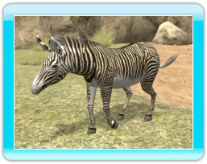

●Aziatische
leeuw
Deze carnivoor uit het woud reist normaliter
in kleine kuddes, maar jaagt
alleen.
 ●Grévyzebra
Deze herbivoor heeft een unieke
tekening en komt voor op de savanne en in
halfwoestijnen. Als het dier wakker is, brengt het
de meeste tijd etend door.
●Nijlpaard
Deze grote herbivoor komt voor in laag gelegen gebieden in Afrika, en brengt de meeste tijd in water door. Het dier kan ongeveer 5 minuten onder water blijven.
●Reuzenpanda
Deze populaire herbivoor komt voor
in bamboebossen, waar hij de meeste tijd kauwend op bamboebladeren doorbrengt.
●Afrikaanse olifant
Deze grote herbivoor komt voor op
de savanne en in bossen. Hij baadt vaak in water,
omdat zijn huid snel uitdroogt door de
zinderende hitte.
●Driebandgordeldier
Deze kleine omnivoor komt voor in
bossen en savanneregio's. Met zijn 20 centimeter is
hij bijzonder klein. Hij rolt zichzelf op
tot een bal om zich tegen roofdieren te beschermen.
●Amerikaanse zwarte beer
Deze
omnivoor komt normaliter voor in bossen.
Hij kan
bijzonder goed in bomen klimmen.
●Maleise tapir
Deze herbivoor komt normaliter voor
in bossen (bij water of in vochtige gebieden), waar
hij normaliter alleen of in paren
reist.